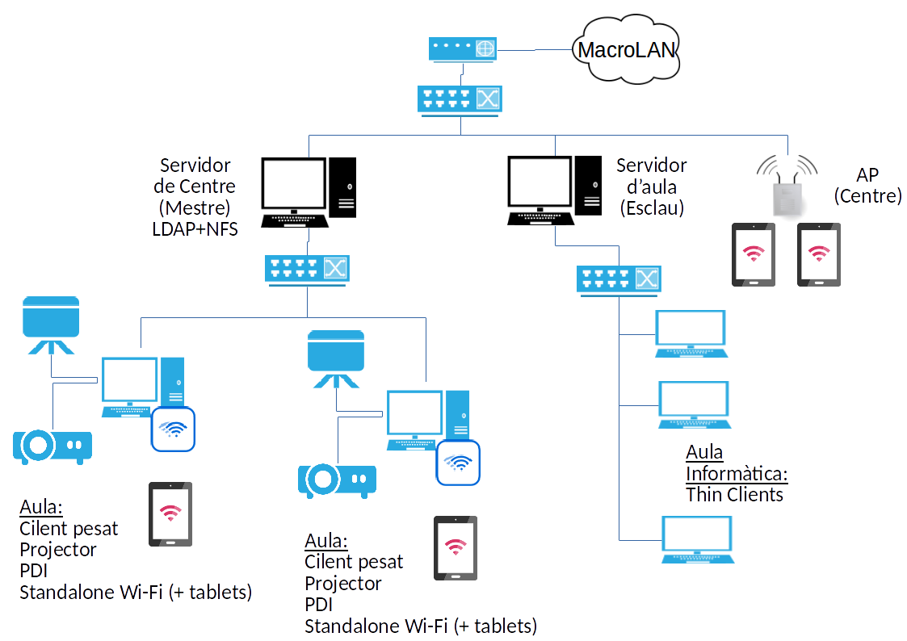

Proposta global per al model de centre
En aquest apartat ens hem centrat en els aspectes més rellevants en quant a infrastructura necessària als centres d'educació especial per tal de complir amb els criteris que ens hem proposat. Aquests poden resumir-se en:
- Aprofitar la dotació existent des del pla IntegraTIC a les aules, especialment el projector i la PDI.
- Incloure l’aula d’informàtica al centre, per equiparar-lo amb els centres d’educació primària, segons estableix la normativa.
- Potenciar l’ús de tauletes i la seua integració a l’aula, a l’ordinador del professor i al projector.
- Incorporar mecanismes per a l’intercanvi de recursos entre el professorat i cap a l’alumnat.
Amb aquestes premisses, i amb la col·laboració i assessorament del servei d'Informàtica per als Centres Educatius a través de l'equip LliureX, proposem un model de centre amb les següents caracteístiques:
- Incorporació de dos servidors al centre:
- Un servidor de centre Mestre, encarregat de la gestió dels usuaris i l’emmagatzemament compartit (NFS).
- Un servidor Esclau per a l’aula d’informàtica, que gestione els clients de l’aula i obtinga els usuaris del servidor.
- Incloure una nova aula d’informàtica, amb el servidor esclau que s’ha comentat, i clients lleugers per tal de facilitar-ne el manteniment des del servidor.
- Incorporació de punts d'accés sense fil per tal de possibilitar l'accés a Internet i de comunicar les tauletes amb l'ordinador.
Amb tot açò, podem vore el model plantejat, de forma esquemàtica al següent gràfic:

Com veiem, disposem dels dos servidors esmentats, un servidor de centre, que contindrà tota la informació i dades dels usuaris, i al que estaran connectats tots els ordinadors del centre, com a clients d'una aula, pel que es possibilitarà l'accés unificat des de totes les aules i per a tots els usuaris.
Dins de cada aula, disposarem de l'ordinador del professor, com a un client del centre, al que tindrem connectats per cable tant el projector com la pissarra digital. Per altra banda, aquests ordinadors disposaran de connexió sense fil, per poder connectar-se a les tauletes, de manera que aquestes puguen comunicar-se al canó i a la PDI a través d'aquest.
I finalment, l'aula d'informàtica, que contemplarà clients lleugers connectats a un servidor d'aula. Aquest servidor estarà configurat en forma de servidor esclau del servidor de centre, de manera que tinga accés a les dades i a la informació dels usuaris.